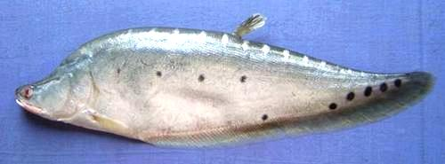

Indian Featherback

[Indian Knifefish; Chital (India, Bangladesh); Kandla, Puli (India);
Moi patara, Vuna (Nepal); Gundun (Pakistan); Chitala chitala]
This Featherback is native to the Indus, Ganges-Brahmaputra, and Mahanadi
river basins in India, Nepal, and Pakistan. It can grow to 48 inches (122 cm)
but is more commonly 30 inches (75 cm). It is fished commercially in the
region and farmed. IUCN Red Listed NT (Near Threatened).
Photo by Hamid Badar Osmany distributed under license
Creative Commons
Attribution-ShareAlike v3.0 Unported.
More on Featherback Knifefish.
Cooking:
In Assam, West Bengal, and Bangladesh, this fish is
cut into steaks and cooked in curries (Chital maasor jul, Chital machher jhol).
Prep for that use is given here. Some admit eating these is a bit tricky, due
to all the bones, fin rays, and pin bones. This fish is also made into patties
and fish balls just as the essentially identical Clown Featherback is used in
Southeast Asia. For that usage, see instructions for
Clown Featherback.
Buying:
The large Asian markets in Los Angeles (Alhambra
and San Gabriel, California) have Featherbacks up to about 19 inches in the
frozen cases, and sometimes larger ones on ice. These will be Clown
Featherbacks, but there is no significant difference except the spots. They
were, until quite recently, considered to be the same species.
Scaling:
This fish is covered with zillions of tiny scales
that take a bit of energy to scrape off.
Cleaning:
There isn't a lot inside these fish and what
there is is hard to get at in the normal way, Just cut the head off behind
the gills and pectoral fins. Then you'll be able to get at what's left in
there.
Filleting:
This isn't practical. For curry, just slice this
fish into steaks about 1 inch thick. Don't cut off the bottom fin - that'll
just make fin rays more difficult to deal with. I have seen a video from
India of a very large featherback being cut into chunks, about 2 x 3 x 1
inch in size, skin-on and bones-in.
Paste:
If you want to make paste for fish patties or fish
balls, see instructions for Clown
Featherback.
sf_fbackiz 220115 - www.clovegarden.com
©Andrew Grygus - agryg@clovegarden.com - Photos
on this page not otherwise credited © cg1
- Linking to and non-commercial use of this page permitted